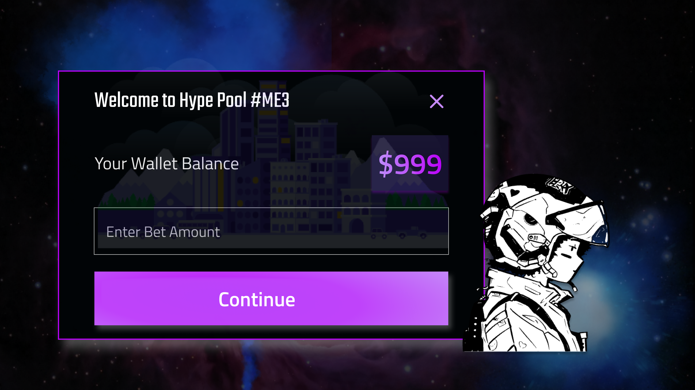

Me3 is a cutting-edge DeFi platform offering innovative products and tools across DeFi, GameFi, and Gamified Staking. Its ecosystem is designed to make decentralized finance more accessible, fair, and engaging—blending powerful functionalities with a user-friendly experience to bring a new level of excitement to DeFi.
$ME3
Team: Brand & Marketing Design Team
Tools: Figma, Miro
Duration: 1.5 year
As the Brand & Marketing Designer at Me3, I led the visual and graphic design strategy across all touchpoints. I was responsible for crafting compelling pitch decks, legal documents, and interactive marketing materials, ensuring brand consistency and clarity. My work spanned across marketing videos, organic social media, educational article webpages, marketplace ads, and internal events—driving engagement and brand recognition. Additionally, I played a key role in creative development and media planning, supporting Me3’s growth and positioning in the DeFi space.

The Product
$ME3 reimagines eSports engagement by creating a dynamic, gamified staking platform that transforms passive token holding into an interactive community experience. The platform's intuitive interface empowers users to participate in prediction pools, stake tokens, and earn rewards through a seamless, blockchain-powered ecosystem that prioritizes transparency and user agency.

Goals
With the rise of Web3 gaming and eSports, there was a growing need for a platform that could make digital asset engagement more accessible and enjoyable for mainstream users while maintaining the excitement of live gaming events. ME3 addresses this challenge by creating an intuitive staking platform that transforms passive token holding into an interactive gaming experience, combining secure blockchain technology with user-friendly design patterns familiar to traditional gaming audiences
Key features
INNOVATIVE STAKING — Revolutionary 'Stake to Win' system transforms passive holding into interactive gaming experiences
IMMERSIVE UI/UX — Sleek dark interface with vibrant purple accents creates a futuristic gaming atmosphere
COMMUNITY GOVERNANCE — Decentralized voting empowers users to shape platform development and evolution


INNOVATIVE STAKING — Revolutionary 'Stake to Win' system transforms passive holding into interactive gaming experiences
IMMERSIVE UI/UX — Sleek dark interface with vibrant purple accents creates a futuristic gaming atmosphere
COMMUNITY GOVERNANCE — Decentralized voting empowers users to shape platform development and evolution
Shaping the Visual Identity of $ME3
As the lead designer for the $ME3 project, I played a key role in crafting a cohesive and compelling visual narrative across all investor materials and marketing assets.
I designed and developed investor decks, pitch presentations, workshop materials, and product showcases, collaborating closely with copywriters to ensure clarity and impact. My work extended to PR images, article web flows, infographics, emails, banners, social media content, website visuals, and documentation articles, creating a unified brand presence across multiple channels.
A major achievement was leading the design of 500+ slides in collaboration with product managers. I focused on layout optimization, hierarchy, and visual storytelling , incorporating feedback on legibility and legal compliance during design critiques. The final decks featured refined key elements, optimized graphs, and clear color categorization, making complex information more digestible for stakeholders.
Beyond presentations, I also developed mood boards, working plans, customer journey maps, and user flows, shaping the overall design direction through early-stage wireframing and concept development. This structured approach resulted in decks that effectively balanced $ME3’s business goals with user needs, ensuring clarity, engagement, and strategic alignment.


.gif)